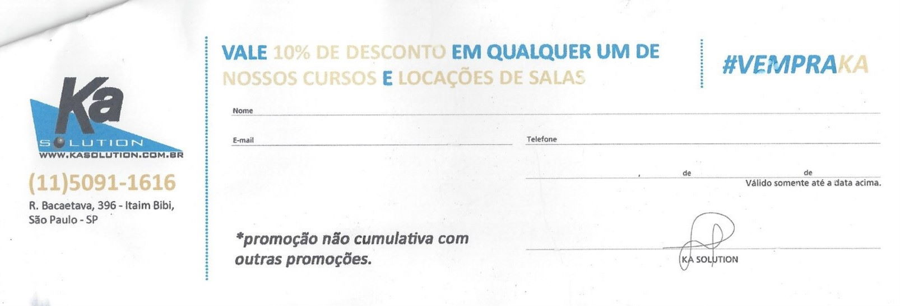

O blog Homelaber faz 5 anos e…
BlogCompartilhe esse post nas redes sociais...
Olá Homelabers!
No último dia 07/03 o Blog Homelaber completou 5 anos de existência.
- 5 anos
- 342 posts
- 800.000 views
- 160.000 usuários únicos
- Acessado em mais de 150 países
Em breve o maior blog conteúdo sobre Homelabs em Português. Siga @homelaber #VMware #vmwareblog #homelab
— Val | Homelaber (@homelaber) March 10, 2015
Os primeiros 5 anos?
Ao longo desses 5 anos, muitas coisas mudaram por aqui e também na minha vida.
Em 2015 eu trabalhava como Analista de Suporte na Multiplus (que não existe mais) e estava começando a dar os primeiros passos com VMware. Aliás, esse foi o maior motivador do blog.
Eu queria informações sobre a tecnologia, encontrei muita coisa em Inglês, mas quase nada em Português. Na época existia apenas o - já finado - blog VMware Brasil do Tiago Martinez.
Lá fora era completamente diferente, “a coisa bombava”. Em quase todos os blogs que eu caia, só se falava de Home Labs.
O vSphere 6.0 havia acabado de ser anunciado e o seu fim de vida chega agora no dia 12/03. E hoje, 10/03 a VMware :) está anunciando o vSphere 7
-
Depois veio o envolvimento com a #vCommunity no Twitter.
-
Depois o vExpert
-
Depois a VMworld em Las Vegas
-
Depois as comunidades no Telegram
-
Depois o VMUG São Paulo
-
Depois mais 2 VMworlds
-
Depois o emprego na VMware
E o resto é história
Sim, o volume de posts “mais técnicos” deu uma diminuída, mas isso é por causa do trabalho e da vida sempre corrida. Muitas vezes eu fico me cobrando escrever mais, mas tem tempos que simplesmente tudo bloqueia e não sai nada.
Mas para você, meu fiel leitor, espero ter feito a diferença na sua vida de alguma maneira com algum post nesse blog.
Os próximos 5 anos?
Sinceramente não sei dizer o que será desse blog em 2025. Quero continuar blogando aqui - talvez de uma maneira diferente - e continuar envolvido com as comunidades.
O que sei é que em breve haverá uma “pequena mudança” de direção sobre os assuntos aqui, vou trazer assuntos um pouco diferentes do que vocês estão acostumados, mas a essência continuará!
E eu só tenho a agradecer a todos que acessam esse blog e me fazem ter cada dia mais vontade de continuar!
Promoção de aniversário

E agora, aproveitando o clima de “festa” a minha amiga Claudia Soares me deu 5 vouchers com 10% de desconto em qualquer treinamento da Ka Solution para eu sortear aqui para vocês.
A Ka Solution é um dos maiores centros de treinamento oficial da América Latina. Lá você vai encontrar treinamentos dos maiores fabricantes como Microsoft, VMware, RedHat, Oracle, SAP, etc.
Para ganhar é mole mole! Os 5 primeiros que me mandarem um tweet dizendo “Parabéns @homelaber pelos 5 anos de blog e eu quero um voucher da @kasolution #homelaber5anos #vempraka” leva!
Simples assim! Mas só os 5 primeiros! A única regra é estar seguindo o @homelaber e o @kasolution no twitter!
E se você estiver procurando treinamento oficial VMware, procure a Claudia Soares e converse com ela.
É isso pessoal! Espero contar com vocês aqui sempre! Até o próximo post!
–VC
Compartilhe esse post nas redes sociais...
Valdecir Carvalho
Nerd e pai orgulhoso da Mariana e João. Profissional Sênior de TI com foco em arquitetura de infraestrutura e cloud computing. Blogueiro, podcaster, palestrante, amante de comunidades técnicas, fotógrafo aposentado e adora jogos antigos.
#vExpert · #VMUGLeader · #VUGBrasil · #vBronwBagBrasil · #VeeamVanguard